August 28 & 29, 2015
| The Friday night before Eric came back to
Montana, the smoke cleared long enough for me to enjoy an evening at the
county fair here in Eureka. The following night, most of the family
gathered at The Bull Thing. This is a bull-riding competition that's
been going on for over a decade, but this year was PBR sanctioned.
It was a really good event. |
|
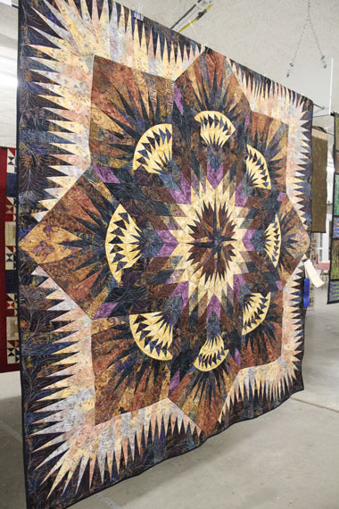 My first stop was the quilt building, of course! |
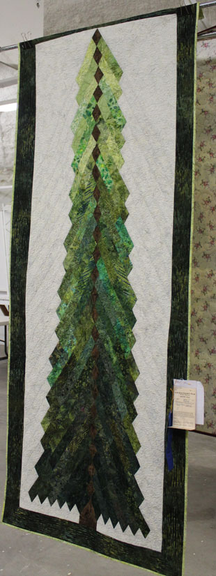 |
| I would love to make a smaller version of this as a wall hanging. | |
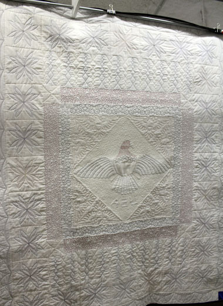 |
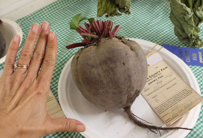 Being a big fan of beets, I had to take a picture of this huge beet |
| The back side of this quilt was as impressive as the front. Amazing work! | |
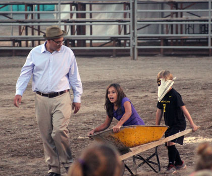 |
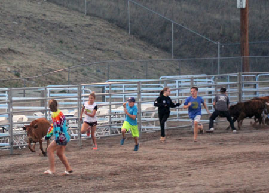 |
| Our friends Jeff, Stella, and Declan at the wheel barrow races | Next was the calf chase, that was a fun show |
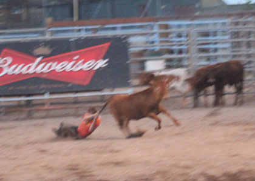 This was the best part - that kid hung on for half the length of the arena. I think the picture was blurry because I was laughing so hard. |
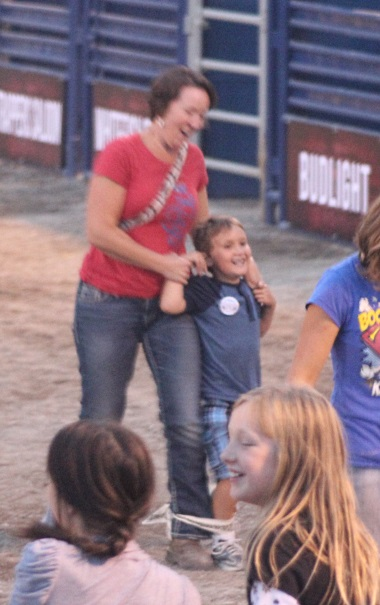 |
| Our friend Amy with Declan enjoying the three-legged race | |
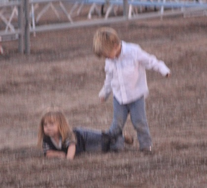 |
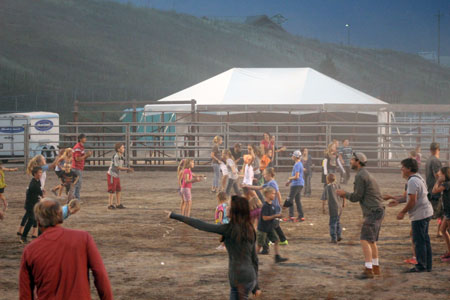 |
| These two were adorable. She fell forward and couldn't get up, her Mom
came and stood her up, then she immediately fell backward. Mom had to carry them both out! |
Egg toss - dramatic event |
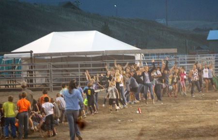 |
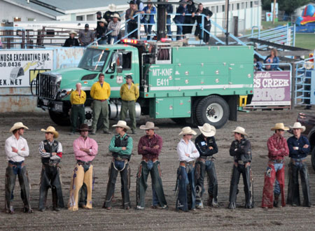 |
| Tug of War: Males against Females. See the girls celebrating their
victory? A man in the stands behind me grumbled, "They had a lot more weight on that side..." |
Now it's Saturday night, Eric is back from OKC, and it's time for The Bull Thing |
|
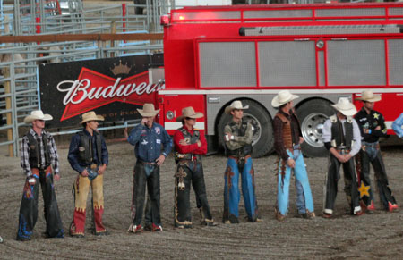 |
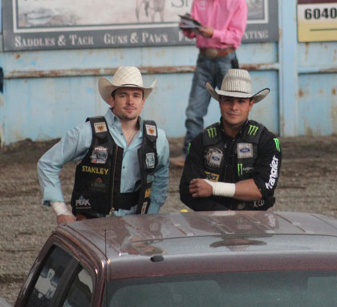 |
|
One chance to see the cowboys before they're beaten
and banged up by as many as 4 rides in one night. |
|
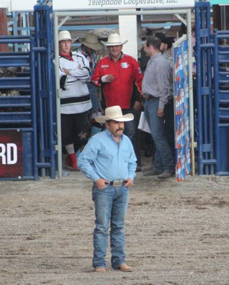 |
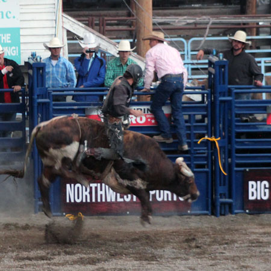 |
| Pat Triplett - an old friend of the family. He was one of the stock
contractors for the event, and his son Matt (ranked #4 in the world at the time) was a local favorite. |
Warning, LOTS of bull riding pictures ahead. |
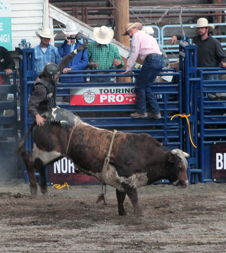 |
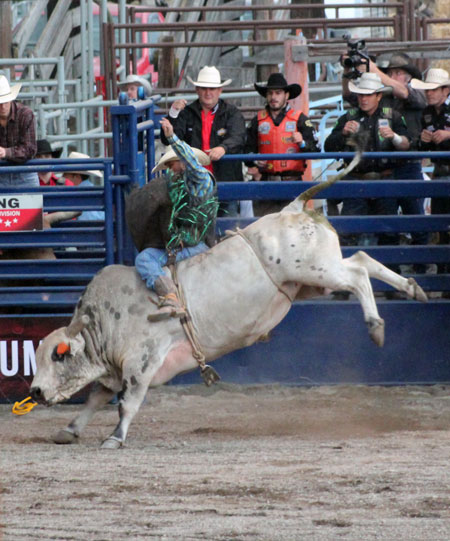 |
| This is the one second just before he got launched into the air | |
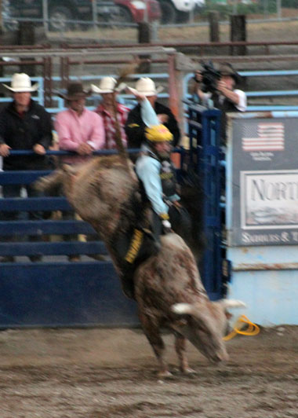 |
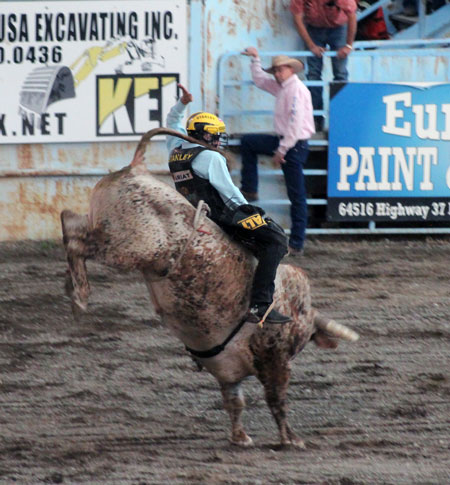 |
| There were some really good bulls there that night | |
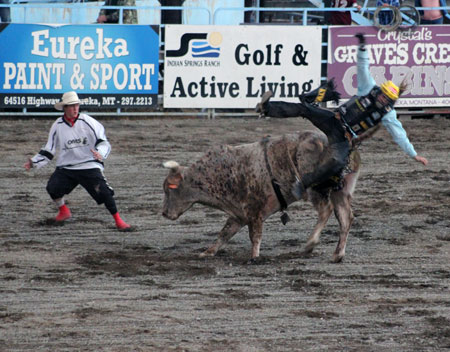 Launched! |
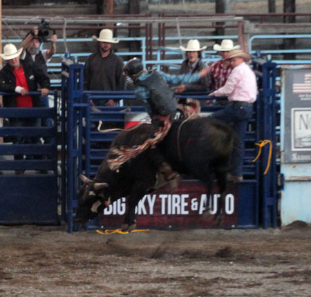 |
| That huge bull must be at least a foot into the air. Those things are super strong. | |
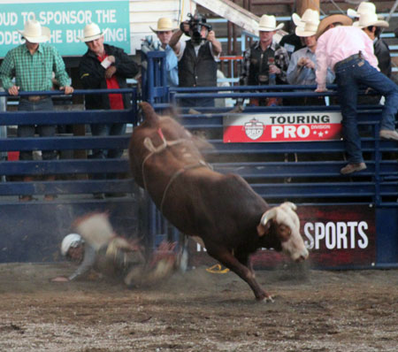 Bad place to be |
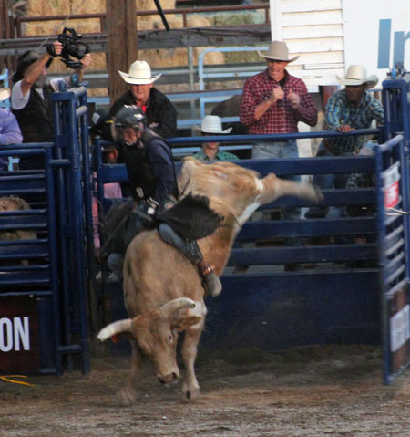 |
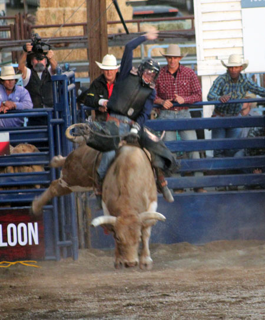 |
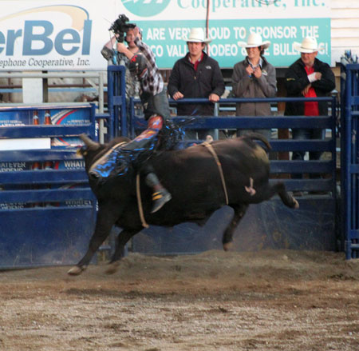 This bull was a spinner. You can almost see the twisting action in this picture. |
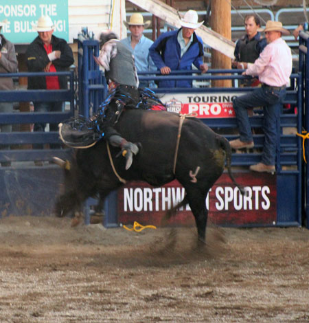 |
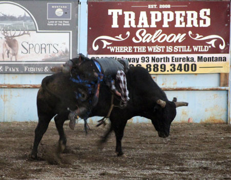 Ouch - glad this guy wore a helmet,, otherwise he would have had a broken nose. |
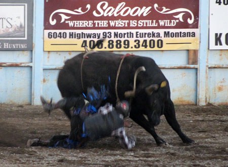 This is the kind of thing that could give a guy nightmares |
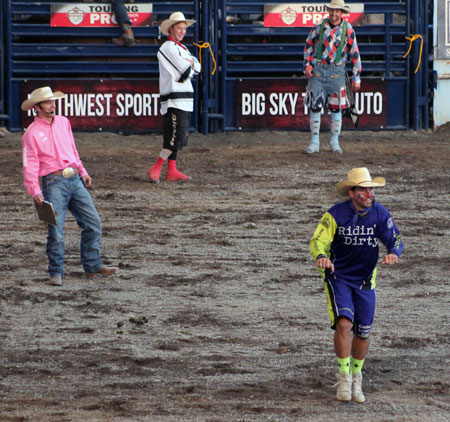 |
| The announcer, bull fighters, and the clown. The clown was a hoot. | |
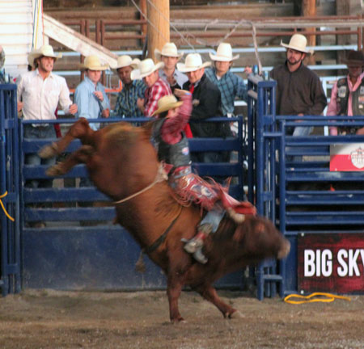 |
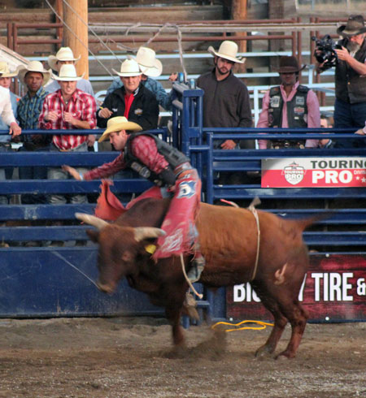 |
| I wonder if all professional bull riders end up with shoulder replacement surgery | |
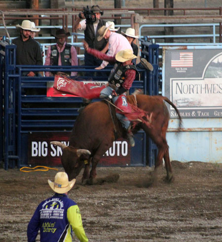 |
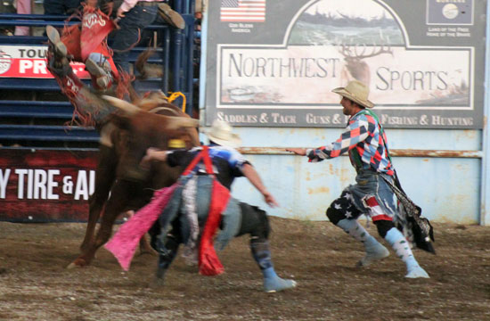 The bull fighters in action |
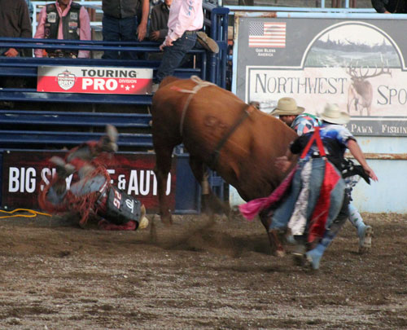 Crunch, this poor boy landed right on his head |
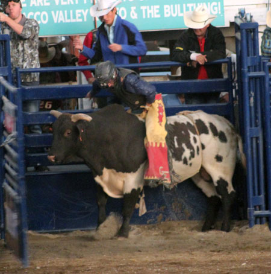 |
| Gerald Eash (pronounced with the G, not Jerald) was the only truly local boy
in the event, and was a crowd favorite. He lives in Trego and is a brother to our pastor. His bull was lazy at first. |
|
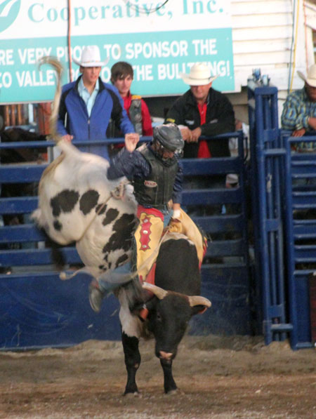 |
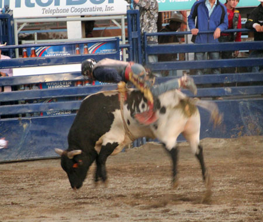 |
| Now the bull remembers how this things works | Here Gerald levitates over the back of the bull |
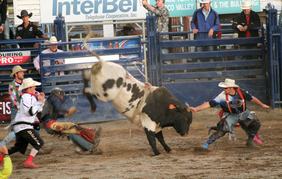 Action shot of the dismount |
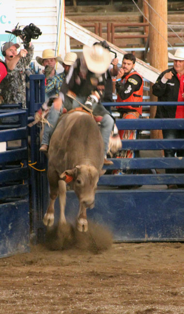 |
| This bull looks so soft and furry to me, but I doubt if it likes to be petted | |
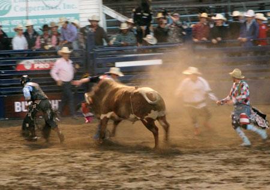 |
|
| One more shot of the action. This bull tries to chase his rider but the
bull fighter stepped right in front of him. That fighter took about 3 very hard hits that night. |
|